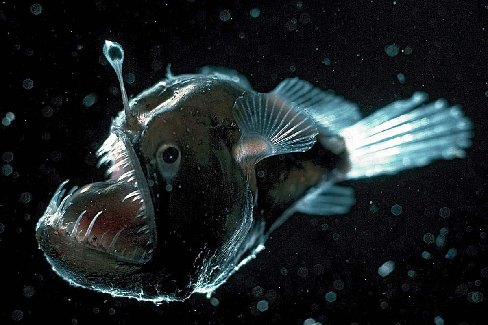
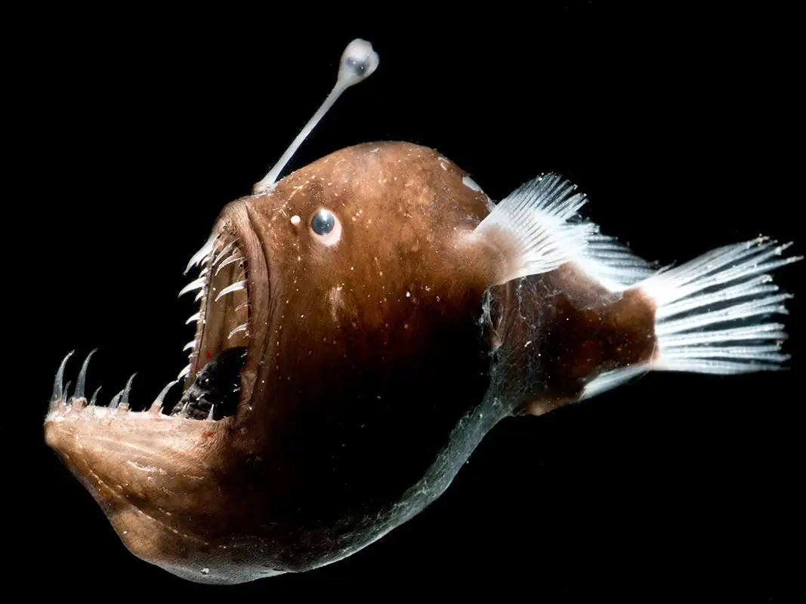
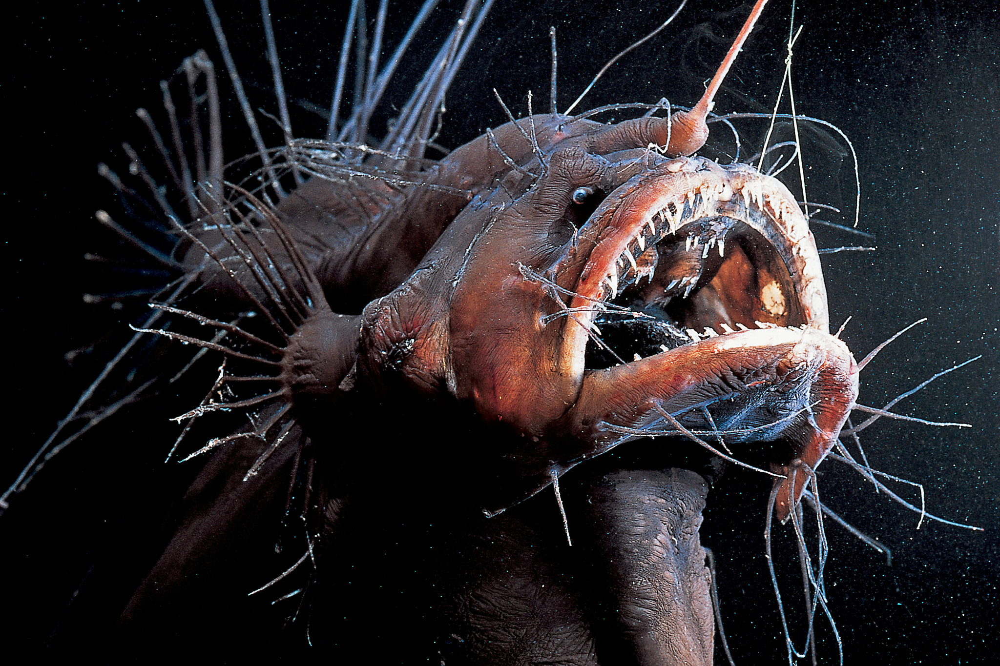

More Photos




Anglerfish are deep-sea predators known for their bioluminescent lure used to attract prey in the dark ocean depths. They have large mouths with sharp teeth and can swallow prey larger than themselves.

